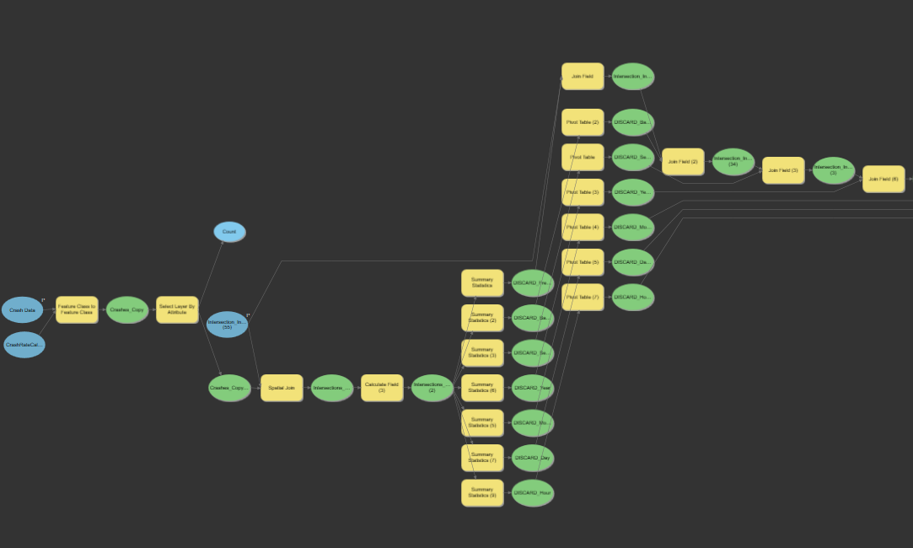

GIS

Pedestrian Ramps
Asset data is used to determine where infrastructure is not ADA compliant along sections of roadway. Along with disparity data and duture project locations, this data is used to plan ADA upgrades.
Map PDF
Traffic Counting
Every year public works staff work to count cars along one half of all county roadways to determine usage and trends. The data is then displayed and informs roadway designs and enhancements, among other uses. PDF maps, webmaps and visualizations are all used to display the information.
Map PDF

Tableau
Using GIS, I've developed several processes in Model Builder to automate complex workflows.